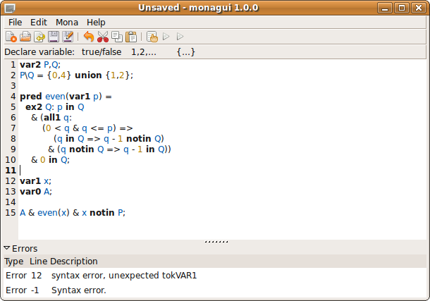

GTK is a part of the GNOME project. gtksourceview is a dependency of gedit, the default text editor of the GNOME desktop. So if you use a recent Linux distribution with a GNOME desktop, you probably have both requirements already installed. MonaGUI does not work yet with GTK3. GTK3 is the successor of GTK2, but incompatible with it. If you have GTK3 installed already, you will also need to install GTK2. gtkmm is also used by some common software like Inkscape. Chances are high that it is also already installed on your system. If not, try to install it using your operating system's package manager.
MONA itself does not need to be installed on the computer.
These requirements are supported, inter alia, by
To compile the software yourself, you need a few more things installed an your computer.
./configure make sudo make installin directory in which you extracted the source archive. After ./configure you may get a notification that some of the libraries are missing or too old. Some of them can be found in the contrib directory, namely gtkmm and its dependencies and gtksourceview. Install them by running
./configure make sudo make installin their directories. If possible, try installing them using your operating system's package manager instead. If you install gtksourceview from there you will also need libxml and intltool (but otherwise not). Doxygen is used by gtkmm, but also works without, even though with some error messages.
sudo dpkg -i monagui_1.0_amd64.deb sudo apt-get install -ion your commandline. This package is for 64 bit (AMD64) systems only.
var2 N; all1 n: n notin N => n+1 in N;This formula sets the condition that if there is an n which is not in the set N, then at least the successor of n must be in this set. The set of all natural numbers fulfills this condition (the premise is always false). However, because it depends on more than a finite amount of numbers being in N, this is not a solution that MONA could find. In fact, for MONA it is unsatisfiable. Internally, MONA transorms such formulas to deterministic finite state machines (DFA).
Here, every element has two instead of just one successor. These are the left and the right child. This doesn't correspond to the natural numbers anymore, but to nodes in an infinite binary tree. "0" is the root of this tree and all nodes are trees with infinitely many subnodes, too.
Internally, MONA uses guided tree automata (GTA) to represent such formulas.The detailed manual for MONA and its language can be found at the MONA website. The site also offers to download the MONA command line tool, articles on its internal workings and application of MONA. There is also a web form to try out MONA online.
The best way to start is to create a new document by selecting "New" from the menu or pressing the leftmost button.
The "New" dialog
For assistance for the first steps, select the tutorial document. Currently, only the standard string mode has a tutorial document.
The document itself can be edited in the main window. It features syntax highlighting and code completion. Use the buttons below the toolbar to insert code that declares a new variable.

The main editor window
To trigger code completion, press Ctrl+Space on the keyboard, or the code completion button in the toolbar. A window will open that suggests snippets, keywords, operators and declared variables that make sense to be inserted at the current cursor position. Note that the document before the cursor should not have any syntax errors, otherwise there will be just a limited number of suggestions.
Code completion at work
To import another automaton, select the import function from the menu or the toolbar. Select a file that contains an automaton. Such automata can either be generated using the MONA command line tool or in the result dialog (see below). MonaGUI will then open the file, look for declared variables, and insert an import statement into the document at the current cursor position.
To run MONA over your document, select "Run" from the main menu or the toolbar. If there are any syntactical or semantical errors, they will be displayed in the window's bottom. If your file is correct, the computation starts. If it takes longer, a window appears that shows the current progress of the process. After that, the result window is shown.
View results
The result window shows the same data as the MONA command line tool would, but in separate categories. If more than one automaton has been generated, they can be selected on the left. The different tabs are explained in the following.
MONA (at least its frontend) is written in C++. To enable us to directly link to the code, MonaGUI is also written in C++. Therefore gtkmm, the official C++ binding to GTK+ is used.
gtksourceview is the editor component also used in gedit, the standard text editor in GNOME. It supports code completion since version 2.10. According to configure.ac, it requires GTK 2.14. Unfortunately, it calls the function gtk_style_get which first appears in GTK 2.16. To make it work with GTK 2.14, gtkmissing.c contains a dummy implementation of gtk_style_get, which returns a constant value for the three properties requested by gtksourceview.
Moreover, the GtkBuilder document of the completion window wants version 2.16, although it also works with GTK 2.14. On a version mismatch, GtkBuilder does not create a window and gtksourceview will access a null pointer later. Because of this, the version constant has been changed to 2.14 in contrib/gtksourceview/gtksourceview/gtksourcecompletionui.h. This means the gtksourceview component from the official source won't work anymore.
As mentioned in the beginning, Mona does not need to be installed on the system. Instead, it is directly compiled into the executable. The reason is that Mona is not intended to be used as a library, even though it compiles and installs four of them into the system. For instance, by default it uses its own malloc implementation, dlmalloc. This alone makes it hard to use with other libaries that use the system's default malloc.
The frontend in contrib/mona/Front has been designed as a standalone executable without the possibility to be used externally. Hence, it has been forked into src/front2, where any changes can be applied which are not overwritten if a new version of Mona would be released. Changes made there include: